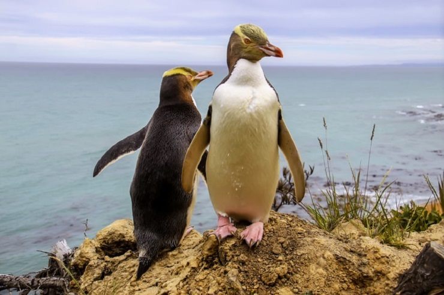
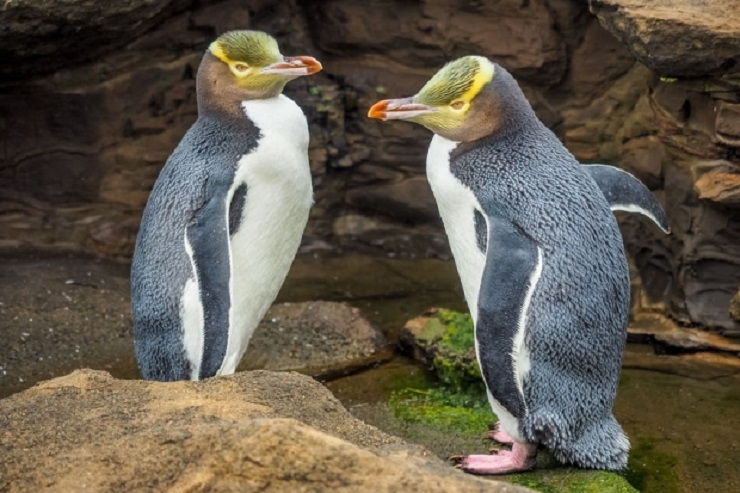
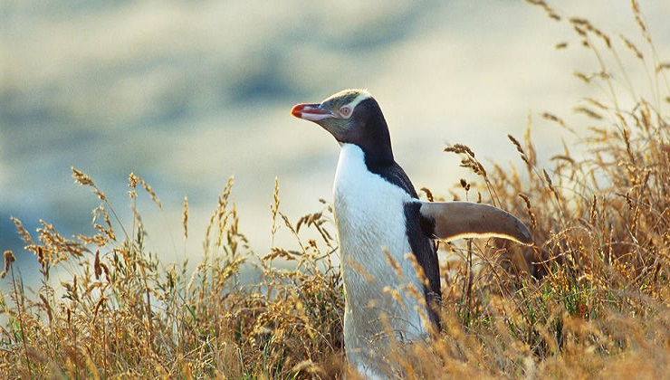

동물 보호 단체 황제펭귄 킹펭귄 아델리펭귄 훔볼트펭귄 마카로니펭귄 바위뛰기펭귄 쇠푸른펭귄 노란눈펭귄 노란눈펭귄 눈의 색에서 이름이 붙여진 펭귄입니다. 키: 65~79cm 몸무게: 7~8kg 분포: 뉴질랜드 남섬의 남동부 해안 몸 전체 깃털은 주로 검은색이며, 턱과 목 부분은 밝은 갈색에 가깝습니다. 날개 바깥 면은 검은색이며 가장자리와 날개 안쪽 면은 흰색입니다. 얼굴은 옅은 노란빛을 띄며, 눈(홍채)의 색 역시 옅은 노란색입니다. 눈 주위에서 시작되어 머리 뒤쪽으로 이어지는 밝은 노란색의 띠 무늬가 있다. 새끼 펭귄의 경우 전체적으로 짙은 갈색 솜털로 덮혀 있으며 어른 펭귄과 달리 머리에 노란 띠 무늬가 없고 눈은 짙은 회색입니다. 주식은 생선이며 오징어와 같은 두족류를 먹기도 힙니다. 작은 만이나 큰 만의 곶과 같은 해변에 있는 숲 또는 관목지에 다른 펭귄의 눈에 띄지 않도록 둥지를 틉니다. 번식을 위해 4~6마리 혹은 개별적으로 뭍으로 올라와 각자의 번식지(둥지)로 흩어집니다. 8월에 번식을 시작하여 9월이 되면 2개의 알을 낳으며, 부화기간은 39~51일입니다. 암컷과 수컷이 며칠씩 번갈아 가며 알을 품습니다.   
눈의 색에서 이름이 붙여진 펭귄입니다.
키: 65~79cm 몸무게: 7~8kg 분포: 뉴질랜드 남섬의 남동부 해안
몸 전체 깃털은 주로 검은색이며, 턱과 목 부분은 밝은 갈색에 가깝습니다. 날개 바깥 면은 검은색이며 가장자리와 날개 안쪽 면은 흰색입니다. 얼굴은 옅은 노란빛을 띄며, 눈(홍채)의 색 역시 옅은 노란색입니다. 눈 주위에서 시작되어 머리 뒤쪽으로 이어지는 밝은 노란색의 띠 무늬가 있다. 새끼 펭귄의 경우 전체적으로 짙은 갈색 솜털로 덮혀 있으며 어른 펭귄과 달리 머리에 노란 띠 무늬가 없고 눈은 짙은 회색입니다. 주식은 생선이며 오징어와 같은 두족류를 먹기도 힙니다. 작은 만이나 큰 만의 곶과 같은 해변에 있는 숲 또는 관목지에 다른 펭귄의 눈에 띄지 않도록 둥지를 틉니다. 번식을 위해 4~6마리 혹은 개별적으로 뭍으로 올라와 각자의 번식지(둥지)로 흩어집니다. 8월에 번식을 시작하여 9월이 되면 2개의 알을 낳으며, 부화기간은 39~51일입니다. 암컷과 수컷이 며칠씩 번갈아 가며 알을 품습니다.